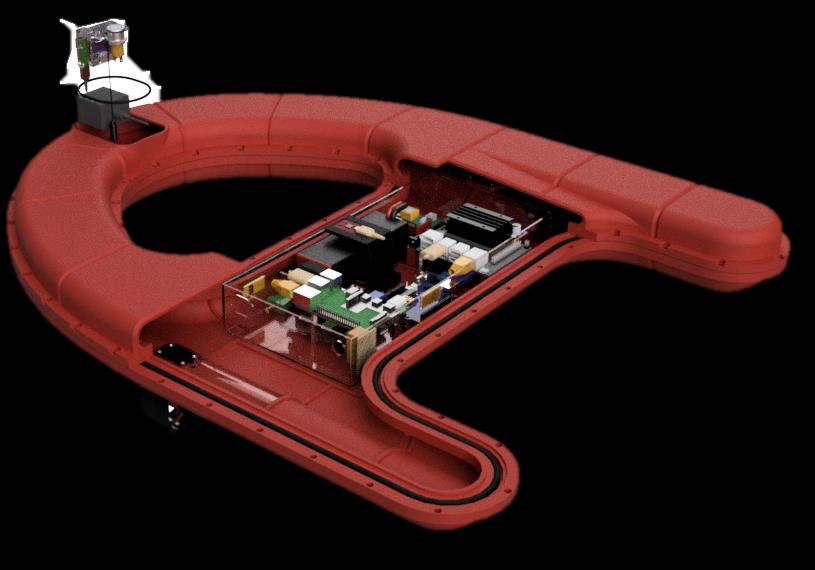

All projects
Capstone design · Hanyang University ERICA · 2020–2022
Help: an unmanned rescue-assist robot for people in the water
Built for marine accidents. It raises the alarm, finds people in the water with RGB and thermal cameras, and until rescuers arrive it reports their position and helps keep them warm.
- Team
- 6 students
- Hardware
- Jetson Nano, Raspberry Pi 4, LoRa
- Stack
- ROS, YOLOv5, TensorRT, Eigen, MariaDB
- Recognition
- Three awards, 2021–2022

The idea
After a marine accident, people in the water have to be found and kept safe until a rescue team arrives. Help raises the alarm when an accident happens, heads toward people in the water, and keeps reporting where they are.
How it works
- 1 Detect the accident In normal operation the IMU tilt is compared with two thresholds. A large tilt sends a warning over LoRa; lying flat is treated as sinking and sends a rescue message with GPS position and time.
- 2 Find people The RGB camera gives bounding boxes; the thermal camera returns the center of a human-temperature region as the target. A Kalman filter tracks the target, and the left and right motors steer toward it.
- 3 Stay and report On reaching the person the robot makes an announcement and keeps sending its GPS position, which a server shows on a live map.
One robot
Several robots
Raspberry Pi 4
Reads the IMU, GPS and a single-point radar, keeps the robot state, and sends it over LoRa.
Jetson Nano
Vision. Runs detection on the RGB and thermal cameras and returns the target pixel when the Raspberry Pi asks.
Robot n
Robot n−1
…
Robot 1
Receiver
Recognition
2022Special Prize, National Capstone Design Competition
2021Silver Award, Creative Engineering Design Competition
2021Grand Prize, CARE Innovation Idea Contest (GIG-Education Program)
2021Selected as a representative entry, capstone design exhibition of the Engineering Education Innovation Center
My part
On a team of six I worked on the system design, motor control, the data server, communication, sensor control, the algorithms and the electrical system.